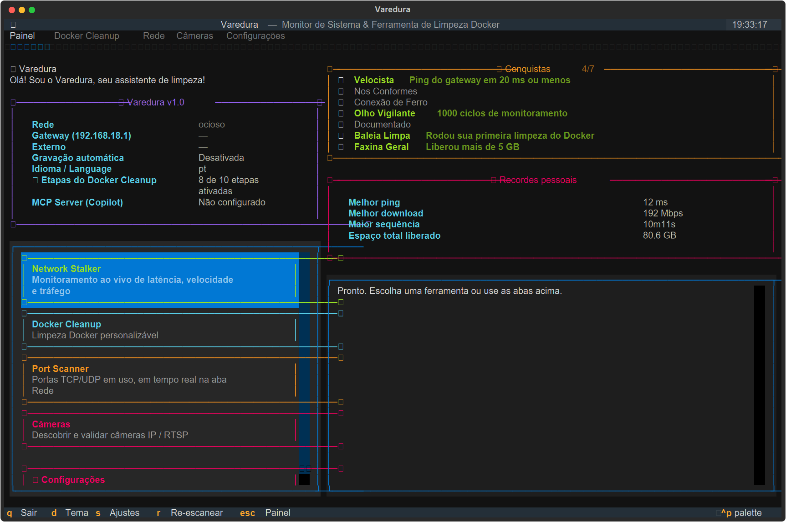
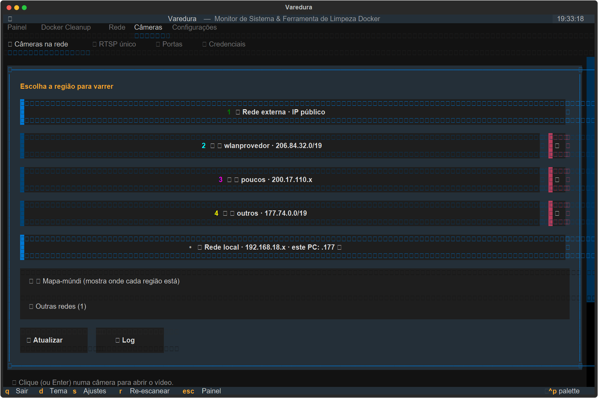
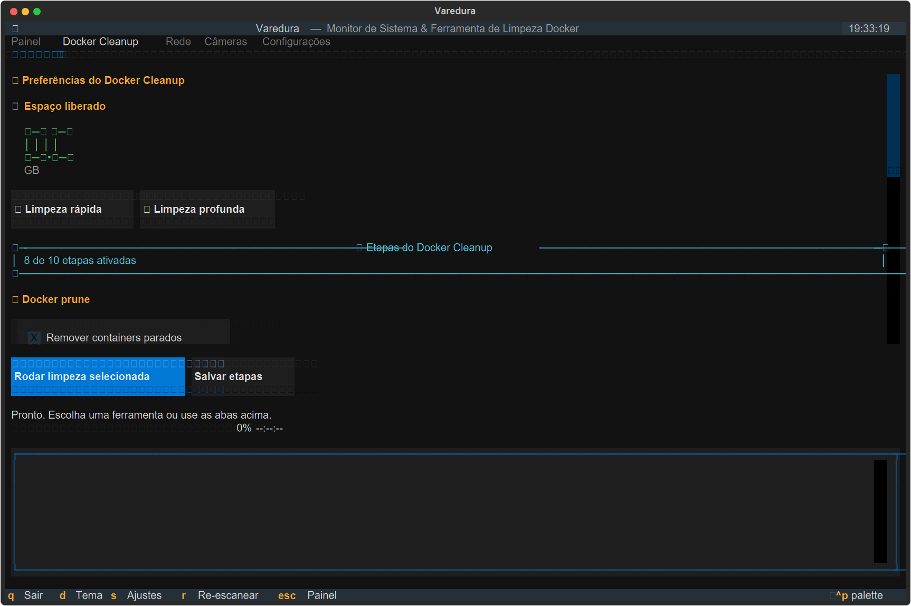
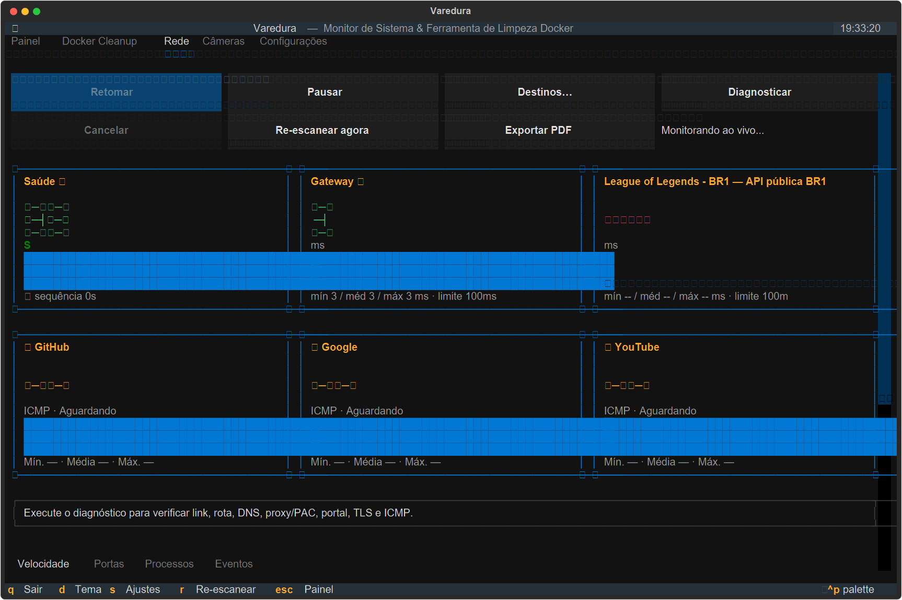
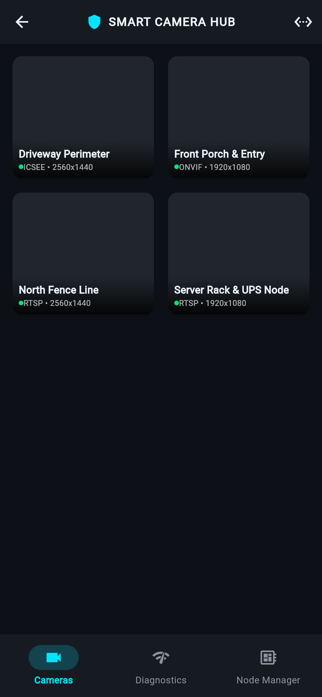
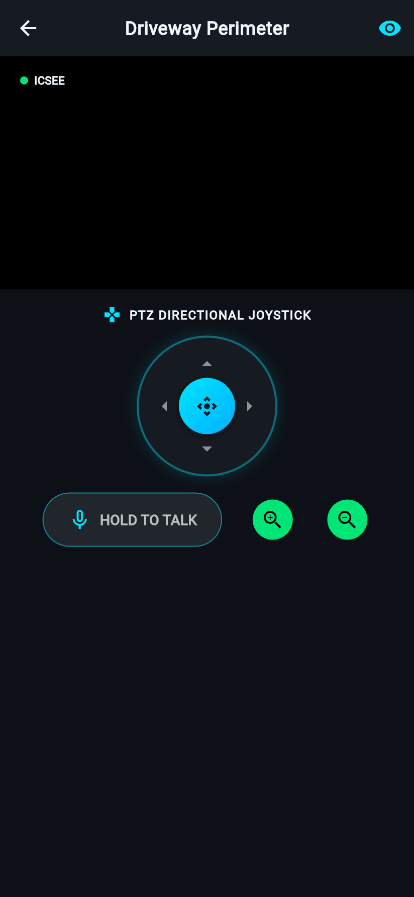
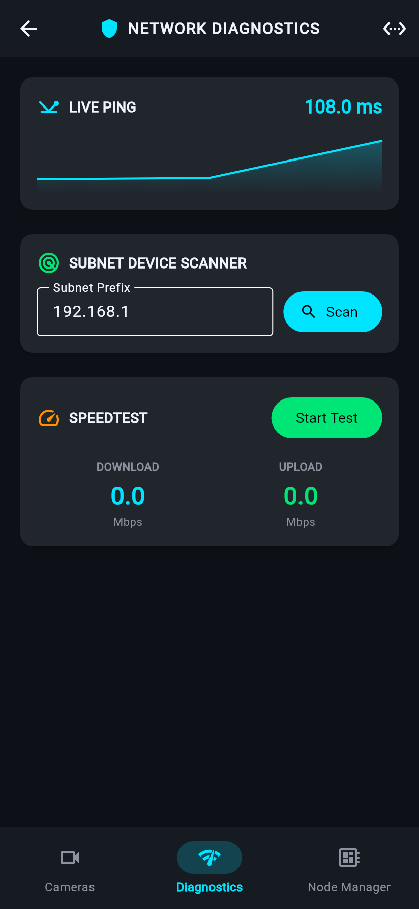
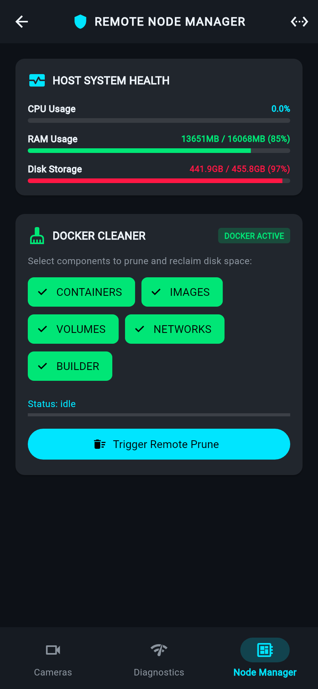

Real-time terminal screenshots captured directly from the hardened Textual TUI engine:




Real pixel-perfect PNG captures rendered directly from the Flutter test simulator engine:




uv run varedura-daemon or TUI). On your smartphone connected to the same Wi-Fi, open:
http://<YOUR_PC_IP>:8420/mobile
mobile/build/web/ and automatically served by the Varedura Node Manager Daemon.
mobile/android/. To compile a native APK package:
cd mobile && flutter build apk --release
| Feature / Metric | Varedura TUI | btop | lazygit | k9s |
|---|---|---|---|---|
| Idle CPU Overhead | < 0.8% | 1.2% - 2.5% | 1.0% | 1.5% |
| Terminal Resize Resilience | 0 Crash (Dynamic Reflow) | 0 Crash | 0 Crash | Occasional redraw artifacts |
| Integrated Camera Hub | Yes (NetIP/RTSP/P2P) | No | No | No |
| WSL2 VHDX Disk Pruner | Yes (1-Click Safe Shrink) | No | No | No |
| Tab Switch Latency | < 35ms (Instant) | < 50ms | < 40ms | < 60ms |
| Protocol / Capability | Varedura Camera Engine | go2rtc | Scrypted |
|---|---|---|---|
| Xiongmai NetIP (Port 34567) | Native Binary Socket Codec | RTSP only | Plugin required |
| Sofia Cloud P2P NAT Traversal | Built-In (No Cloud Dependency) | No | Cloud proxy required |
| LAN Glass-to-Glass Latency | 140ms - 180ms | 150ms - 220ms | 200ms - 350ms |
| Auto ONVIF/RTSP Payload Injection | Automatic (1-Click Enable) | Manual | Manual |
| 3D Space Polaroids Synchronization | Native Atomic IPC | No | No |
| Analytics Feature | Varedura AI Vision | Frigate NVR |
|---|---|---|
| Directional Tripwire (Perimeter) | Vector Cross-Product Math | Line Intersection |
| Zone Intrusion (Geofencing) | Ray-Casting Convex Polygons | Bounding Box Centroid |
| Loitering Detection | Temporal Dwell Time Tracker | Stationary Object Timer |
| 2D Movement Heatmap Accumulator | Built-In Real-Time Grid | External / Plugin |
| Inference Latency (Edge YOLO) | < 45ms per frame | 40ms - 60ms |
| Mobile Feature | Varedura Mobile Suite | DJI Mimo | Apple HomeKit Camera UI |
|---|---|---|---|
| 8-Way Interactive PTZ Touch Joystick | Yes (Haptic Feedback) | Yes (Gimbal only) | No (Step buttons only) |
| Real-Time AI Bounding Box Overlay | Custom Canvas Painter | Tracking box | Activity Zone box only |
| 2-Way Audio Hold-to-Talk | Yes (Instant Mute/Unmute) | No | Yes |
| Integrated Network Diagnostics & Speedtest | Yes (Sparkline + Subnet Scan) | No | No |
| Remote Host System & Docker Manager | Yes (1-Click Prune + Stats) | No | No |